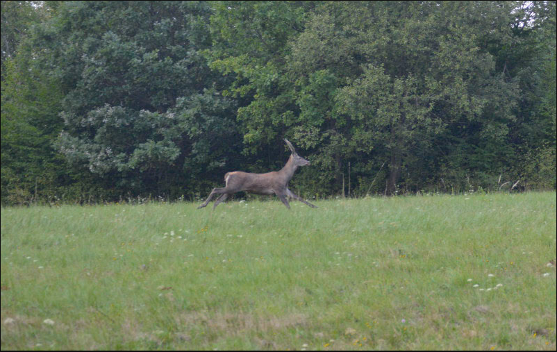
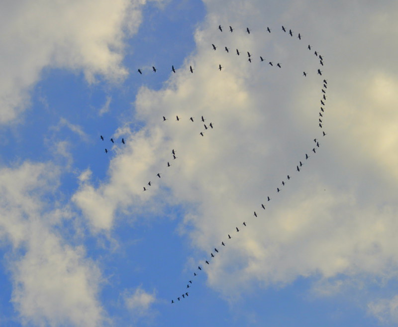
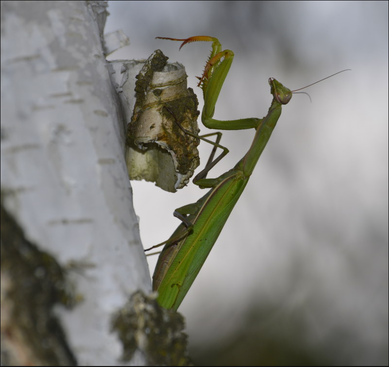

Aktualności 2016
Wydarzenia i informacje
Na stronie Archiwum Państwowego w Przemyślu znaleźliśmy akty notarialne wykonane przez c.k. notariusza Jędrzeja Pawlisza w Dobromilu dotyczące mieszkańców Kopysna. Jeden z nich dotyczy Alberta Kettnera i jego rodziny, drugi rodziny Krupów.
Na stronie umieściliśmy wykaz mieszkańców Kopysna biorących udział w działaniach wojennych podczas I wojny światowej w oparciu o wykaz strat sporządzony przez władze austro-węgierskie. Wykaz ten nie obejmuje wszystkich mieszkańców Kopysna. Zweryfikowaliśmy także osoby zajmujące się oświatą w latach 1880-1935.
Dzięki coraz liczniejszym dokumentom zamieszczanym w Internecie dokonaliśmy weryfikacji danych historycznych dotyczących m.in. właścicieli Kopysna, tj. rodu Lubomirskich i Tyszkowskich. Udało się nam także ustalić kim jest jedna z osób na zamieszczonej na stronie wizytówce.
W drodze z Sanoka do Przemyśla (droga krajowa nr 28, zwana karpacką) zatrzymaliśmy się nieopodal góry Mordownia, niedaleko miejscowości Cisowa. Z punktu widokowego ujrzeliśmy szczyt Kopystanki a wokół niej cudownie przebarwiające się tej jesieni drzewa. Warunki atmosferyczne nie pozwoliły nam jednak na wykonanie fotografii, która oddałaby pełnię piękna tego miejsca.

Z uwagi na zbliżającą się jesień postanowiliśmy wybrać się na Kopysno, by rozkoszować się tutejszą przyrodą i krajobrazem. Pomimo trudnej do pokonania drogi (wyboista, pełna kolein), na szczęście udało się nam dotrzeć na miejsce. Trudy podróży wynagrodziły nam miłe niespodzianki. Co prawda liczyliśmy na urodzaj grzybów, ale z powodu suszy, poza kilkoma kozakami, nic więcej nie znaleźliśmy. Na łąkach za to ujrzeliśmy licznie kwitnące zimowity jesienne (Colchicum autumnale).

Spotkaliśmy także nadlatujący klucz dzikich gęsi, samotnego samca jelenia (byka) (Cervus elaphus), który wystraszony wybiegł z zarośli i uciekając przed nami schronił się w lesie obok kapliczki św. Jana.
 
Dokonaliśmy niezwykłego odkrycia. Pewnie niejeden entomolog na widok pewnej "pani" skakał by z zachwytu. Zlokalizowaliśmy dwa stanowiska modliszki zwyczajnej (Mantis religiosa), bardzo rzadkiego i chronionego owada, który z roku na rok zajmuje coraz większe tereny południowo-wschodniej Polski.

W połowie sierpnia 2016 r. wizytę w Kopysnie złożyły Ліля Іваніцька i Tatiana Ivanitska, przedstawicielki rodziny Kopałeckich wysiedlonej w 1945 roku do miejscowości Buczacz (obecnie Ukraina). Swoje wrażenia z wizyty obie Panie zamieściły na Facebooku. Warta uwagi jest pamiątkowa tablica o wysiedlonej rodzinie umieszczona przez Nie na cmentarzu w Kopysnie, którą można obejrzeć na profilu facebookowym Tatiany Ivanitskiej.
Kolejna przykra wiadomość dotarła dziś do nas z m. Buczacz na Ukrainie.
W dniu 10 lutego 2016 r. zmarł dawny mieszkaniec Kopysna - Iwan (Jan) Krupa ,,Siwak", o którym pisaliśmy w aktualnościach z dnia 6 marca 2013 r. i którego bardzo ciekawe wspomnienia zamieściliśmy na naszej stronie. Dzięki Niemu mogliśmy poznać nieznane i bardzo cenne dla nas szczegóły związane z historią Kopysna. Kto jeszcze nie zapoznał się z nimi zapraszamy do lektury wspomnień i obejrzenia fotografii na naszej stronie (zob. "Iwan Krupa - Kopysno " wersja w j. ukraińskim, "Jan Krupa - Kopysno - pl" - wersja w języku polskim, zakładka - Osoby).
Pozwoliliśmy sobie zamieścić także oryginalną wiadomość o śmierci w języku ukraińskim i angielskim, dostarczoną nam przez Pana Mariusza Jesionowskiego, któremu bardzo dziękujemy.
Ми з жалем повідомляємо вам,
10 лютого 2016, що залишив нас у віці старше 90 років житель села Koпиcнo:
- Іван (Іоанн) Крупа ,,Ciвak"(31.03.1926-10.05.2016), син Софіi і Петрa, народився в селі Koпиcнo до Риботичі, і жив досі в Бучачі в провінції Тернопіль, Україна, автор книги ,,Koпиcнo” на української мови в Бучачi у 2010 році (в перекладі мною на польську мову в листопаді 2013р. вCлупську).
Про смертi свого батька, Івана Крупа - сказав мені вчора його син - Руслан Крупа.
Я даю деяку пам'ять пізнанoмyc мною в 2013 р. Іванy Крупа, тому для багатьох - звичайнa людинa, а також відмінно підходить для мене - через його життєвому шляху і досягнення, і свідчання o племеніx Крупа і селe Koпиcнo.
Я вітаю і вітати долю нашого брата Івана на шляху до Господа.
Маріуш Лех Eciнoвcкi від Слупськa, Р.Х. 11 травня 2016
***
We regret to inform you,
February 10, 2016 that he left us over the age of 90. years old resident of the village Kopysno
- Ivan (John) Krupa ,,Ciwak" (31.03.26-10.05.16), son of Peter and Sophia, b. In Kopysno k. Rybotycze, and living so far in Buchach in the province Ternopil, Ukraine, author of the Ukrainian language in Buczacz in 2010. of the book ,, Kopysno" (translated by me on j. polish in November 2013. In Slupsk).
About the death of his father, Ivan Krupa - he told me yesterday his son - Ruslan Krupa.
I give some memory cognized by me in 2013. Ivan Krupa ago for many ordinary man, and also great for me - through his life journey and achievements and bearing witness to the tribe Krupa and villages Kopysno.
Hyle face the fate of our brother Ivan on his way to the Lord.
Mariusz Lech Jesionowski from Slupsk, A.D. May 11, 2016
Z przykrością informujemy, iż niedawno tj. 2 stycznia 2016 r. zmarł dawny mieszkaniec Kopysna - Stanisław Kulhawiec syn Katarzyny i Mikołaja, ur. 25.09.1945 r. w Kopysnie i zamieszkały w miejscowości Góra, woj. dolnośląskie.
O śmierci stryja poinformował nas Jarosław Kulhawiec.